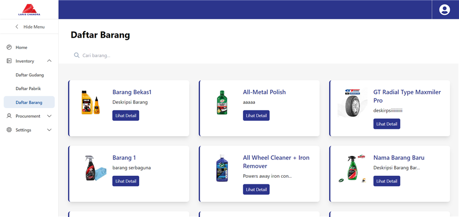
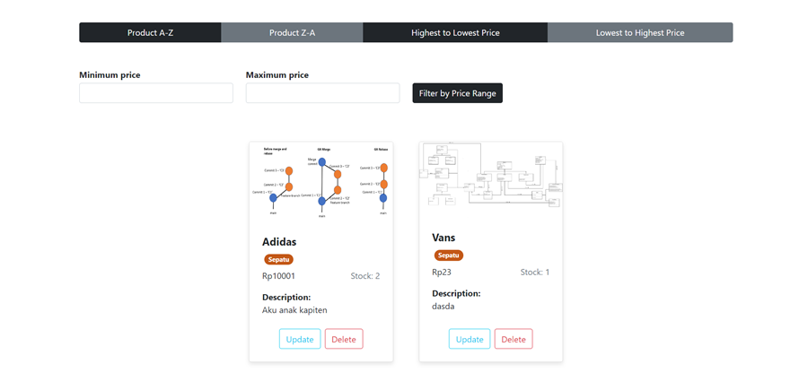
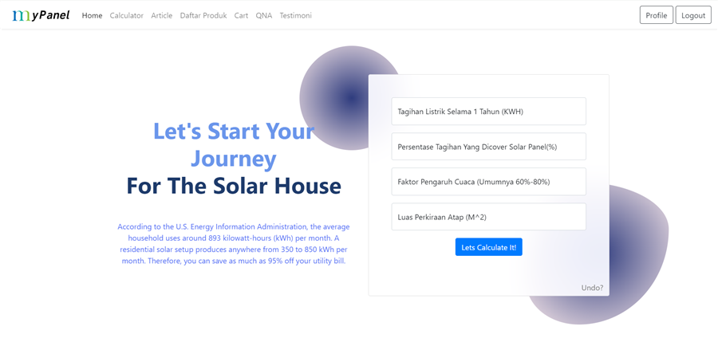
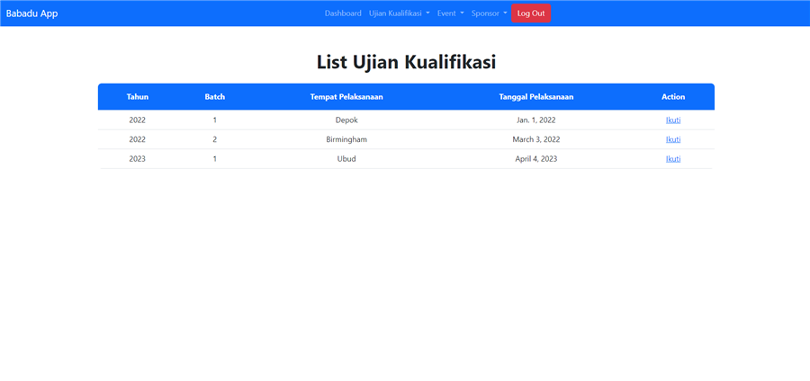

Making systems
work together.
My name is Rama Tridigdaya. I build tools that make everyday work a little easier, especially when it involves repetitive tasks or systems that don’t quite talk to each other. These days, a lot of that work happens in Odoo. I also enjoy exploring new technology and finding out what it can do.
IT Engineer at Monotaro Indonesia
Selected work
Procurement / Search / SupportOdoo Procurement Automation
Bringing RFQs, purchase orders, payment notices, and pickup scheduling from Odoo into suppliers’ WhatsApp conversations.
Meilisearch Integration
Direct product suggestions in the search bar, backed by daily index rebuilds and product-focused relevance tuning.
Python / Meilisearch / BigQueryCustomer supportChatDesk
A Zendesk sidebar app for customer WhatsApp conversations, ticket-to-template field mapping, and outreach logging.
Zendesk app / Python / ChatwootBehind the work.
I’m Rama Tridigdaya, an Information Systems graduate from Universitas Indonesia and an IT Engineer at Monotaro Indonesia.
My work covers Odoo procurement workflows, backend integrations, product search, and internal tools for the people running day-to-day operations.
Universitas IndonesiaInformation Systems graduate
Backend & ERP
Python / Django / Spring Boot
Odoo / Oracle APEX
Data & search
SQL / PostgreSQL / MySQL
BigQuery / Meilisearch
Integrations
Chatwoot / Zendesk
Meta WhatsApp API
Cloud & interfaces
GCP / Docker
React / HTML / CSS
Further work.
Warehouse operations and university projects in commerce, energy, and sports.
Stock Count Management
Awaiting operational useAn Oracle APEX application for stock-count sessions, printable QR-linked sheets, and recount cycles, with Odoo file import and export.
Explore project
SI-LCI
An inventory and procurement system for tracking warehouse stock and purchasing from suppliers.
Explore project
Apapedia
An e-commerce platform with a web interface for sellers and a mobile application for buyers.
Explore project
MyPanel
A web and mobile application for learning about solar panels, exploring products, and estimating installation costs.
Explore project
Babadu
A Django and PostgreSQL application for tracking badminton athletes and tournaments.
Explore projectLet’s connect.
Find me on LinkedIn or explore more of my work on GitHub.